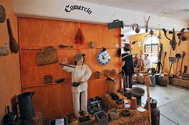
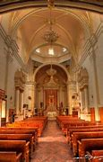
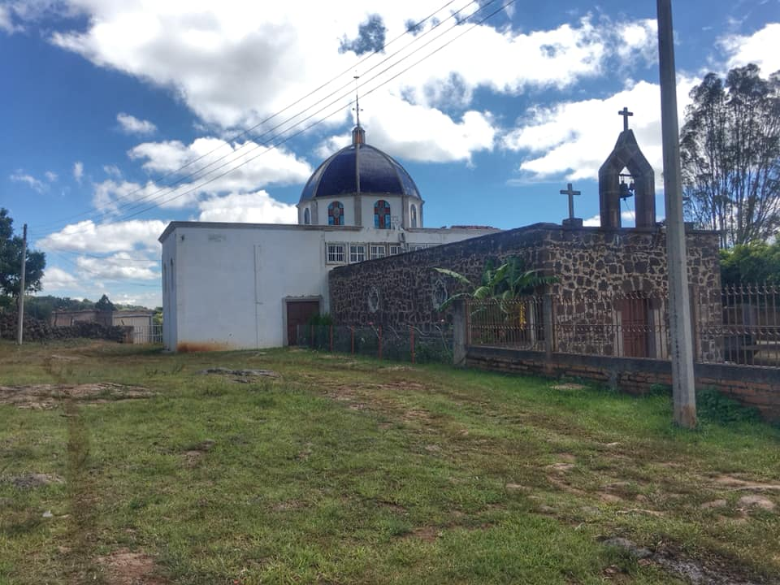
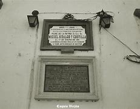
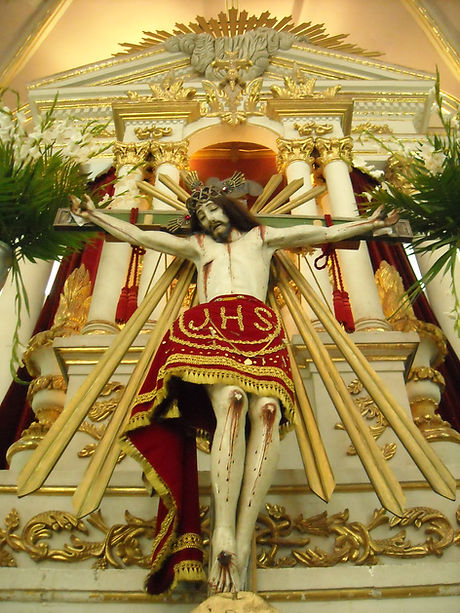

Museo Comunitario de Cuquío

Este museo alberga piezas arqueológicas, fotografías antiguas y documentos históricos que narran la historia del municipio.
Parroquia de San Felipe Apóstol

Construida en el siglo XVIII, esta parroquia es uno de los principales referentes históricos y religiosos de Cuquío.
Templo de la Virgen de la Cucharita

En los mil ochocientos (1800's), cerca del pueblito de Huisquilco, en Jalisco, México, se apareció la Virgen de Guadalupe. Esto le sucedió a nuestra bisabuela, una humilde y paciente esposa llamada Benita. Ella vivía en un jacal construido de piedras y ramas.
Una vez, mientras estaba en su fogón revolviendo el atole en la olla, su esposo le dijo: "Voy a traer unos amigos, y espero que tengas suficiente para todos ellos". Mientras ella revolvía el atole, estaba rezando, pidiéndole a la Virgen tener suficiente para todos, ya que él era muy malo y ella le tenía miedo.
Ella sirvió atole a todos y la olla seguía llenándose. Sorprendida de ver esto, levantó la cuchara y miró la imagen de la Virgen de Guadalupe estampada en la cuchara. Desde entonces, la cuchara se ha extendido y la imagen ha crecido.
Cuando nuestro abuelo Aniceto Vásquez murió, nuestro padre, Bartolo Vásquez, trató de llevarse la Virgen con él a los Estados Unidos. La gente del rancho se opuso y la escondieron para que no se la llevara, diciendo que les pertenecía porque ahí se había aparecido.
Tiempo después, y en honor a la Virgen, nuestro padre construyó una capilla. Su fe y dedicación fueron tan grandes que cada año hacía peregrinaciones de Estados Unidos al rancho para terminarla, trayendo consigo cuadros con las estaciones del Viacrucis de la Iglesia Cristo Rey en La Colonia, Oxnard, California, la cual estaba en reconstrucción, y donde el padre donó dichos cuadros.
Nuestro padre terminó la capilla en 1963. Cuando estuvo terminada, la gente de Huisquilco se llevó a la "Virgen de la Cucharita" a la iglesia de Huisquilco.
Entonces, la gente del rancho tuvo que apelar ante las altas autoridades de la Iglesia en Guadalajara para que la Virgen fuera regresada a la capilla que había construido nuestro padre en el rancho. La Virgen fue regresada un día 12 de febrero. Desde entonces, se celebra la fiesta a la "Virgen de la Cucharita".
Unos días antes, la gente del rancho lleva de visita a la "Virgen de la Cucharita" a la iglesia de Huisquilco. Y el día 12 de febrero, salen de la iglesia de Huisquilco cargando a la Virgen, caminando en una procesión de miles de peregrinos.
Durante todo el año se ofrece homenaje a la Virgen por los milagros que ha hecho, prueba de ello son cadenas, cuadros, cartas, fotos y ropones que cuelgan en las paredes. Así como una placa del Vaticano firmada por el Papa John Paul II reconociendo a la Virgen.
Casa donde se hospedó Miguel Hidalgo

Durante su paso por Cuquío, Miguel Hidalgo y Costilla se hospedó en esta casa, la cual hoy en día se conserva como un sitio histórico que conmemora su lucha por la Independencia de México.
Historia del Señor de Teponahuasco

Ciertamente Cortés conquistó Tenochtitlan y Nuño Beltrán de Guzmán, Cristóbal de Oñate y Chrinos, el occidente de Nueva España, todos con espada en mano enfrentándose a los temerosos nativos de los pueblos, que extrañados veían a los hombres de piel blanca montados sobre impactantes animales que les envestían y aniquilaban en su lucha dentro de las terribles batallas. Todos cuidaban su territorio, se aferraban a su gobierno y aunque temerosos, les salían al encuentro.
Pero además de ésta, vino una conquista aún mayor, que no solo impondría su mano fuerte, sino que trataría de convencer las mentes e imponer nuevos ideales y costumbres, no eran más los hombres gallardos con armadura y espada, sino hombres con harapos y algunas veces descalzos, predicando el amor y el consuelo en un pueblo resentido, herido y callado. ¿Habría entonces razón para sospechar en estos caballeros cualquier afán de conquista? Más bien, satisfechos se mostraron los nativos al recibirlos en sus aposentos. Bien es cierto que muchos se rebelaron ante esta imposición, y luego descubrieron que no todos aquellos hombres los eran buenos, sin embargo, la conquista espiritual así comenzó.
Los Franciscanos arribaron a nuestros pueblos conquistando y evangelizando en nombre de Carlos V, rey de España, a quien el Papa le había cedido las tierras descubiertas a cambio de su promesa de evangelizar a todos los habitantes. Fue así como los frailes llegaron con el poder temporal y espiritual a impartir su doctrina, misma que apoyaron por medio de las imágenes, principalmente de María o Cristo crucificado, que colocaban en los hospitales de indios para difundir su fe, ya que aquellas figuras poseían rasgos indígenas, como tez morena, rostros no tan afilados, etc.
En Cuquío destaca el caso de Teponahuasco, adonde fueron llevadas dos imágenes, pero de ellas sobresale una en específico, que según el historiador Dávila Gariby es una escultura de mediados del S. XVII, catalogada así por sus características tan diferentes y por ser no solo un baluarte histórico sino artístico, pues su fina manufactura y hermosos detalles lograron conmover y enamorar a los feligreses de toda la región.
A decir verdad no existe gran cantidad de documentos que nos relaten el surgimiento de esta imagen. Ha sido más bien la tradición oral la que se ha encargado de transmitir dicha historia al paso de los años y que ha sido contada de generación en generación. El relato que se escucha en las pláticas de los viejos se remonta a varios cientos de años atrás, cuando el pueblo de Teponahuasco estaba pasando por una de sus grandes dificultades, enfrentándose a una de las más crueles pestes que iban acabando con la vida de muchos hombres y mujeres. Se dice que en un acto desesperado, los frailes trajeron ese Cristo al lugar, con el afán de pedir su auxilio. Gran sorpresa causó el observar que la enfermedad fue erradicada, disminuyendo el número de decesos rápidamente. Este hecho provocó que los nativos sintieran gran afecto y gratitud por la imagen.
Los habitantes de Tacotlán, pueblo indígena de importancia, en donde se había fundado en algún tiempo la ciudad de Guadalajara, al saber lo que estaba sucediendo en Teponahuasco exigieron que el crucifijo fuera llevado a aquel lugar, solicitud que se enfrentó a una rotunda negativa. Al saber esto, algunos hombres de Tacotlán decidieron venir a llevárselo sin consentimiento alguno, así que entraron por las ventanas, abrieron las puertas y robaron el Cristo. Cuando se alejaban ya del poblado rumbo a su pueblo natal, sintieron que la escultura comenzó a pesar demasiado y, en un afán por soportar el trayecto, decidieron reposar un momento. Gran sorpresa se llevaron al pretender retomar el camino, pues la imagen pesaba tanto que era imposible levantarla. Esto llenó de admiración a los ladrones y, en un acto de temor y arrepentimiento, huyeron asustados hacia Tacotlán.
Los nativos de Teponahuasco al escuchar el alboroto salieron en defensa de su Señor, mismo que tomaron y llevaron con facilidad de regreso a su pequeño templo. La noticia de este hecho recorrió toda la jurisdicción, haciendo que un gran número de personas comenzaran a visitar el Cristo al que llamaban San Salvador y que posteriormente sería nombrado Señor de Teponahuasco.
Años después, durante la época colonial, una circular del rey de España ordenaba que las imágenes de los pueblos de indios fueran trasladadas a las cabeceras para aumentar la devoción y acrecentar la fe, y así sucedió. Desde aquel momento el Señor de Teponahuasco comenzó a ser trasladado de su santuario a la Parroquia de San Felipe de Cuquío y a cada una de sus romerías se iban sumando mayor número de devotos.
Como ya antes lo he explicado, esta es la historia oral que ha sido transmitida de generación en generación y aunque existen documentos que registran la gran importancia del pueblo ya mencionado y de su templo, lo que en verdad avala dicho relato es la fe y devoción que ha despertado en tan gran cantidad de corazones. Pues de aquí surge esa gran tradición en la que el domingo más cercano al 15 de junio la imagen de Cristo crucificado es trasladada hasta Cuquío, partiendo de su santuario cerca de las 8 de la mañana y arribando a las primeras calles de la cabecera a las 11 a.m. En el lugar llamado "Los Palmitos" se celebra la Eucaristía, donde el Crucifijo es descubierto, sacándolo de la caja que lo resguarda. La multitud lo observa y aplaude continuamente, llenos de alegría, emoción y conmovidos por aquella fe tan grande que les fue infundida por sus antepasados.
Posteriormente la imagen continúa su recorrido bajo el varipalio entre el sonido estridente de las campanas y los truenos atemorizantes de las ristras, que son muestra contundente de la alegría que embarga al pueblo en tan hermosa celebración. Y en menos de media hora el Señor de Teponahuasco hace su entrada triunfal en la iglesia de San Felipe Apóstol. Es la única fecha en la que se puede observar que las enormes puertas se abren por completo y en el que desborda su capacidad al verse insuficiente el espacio para albergar a tantos devotos.
Ritual parecido sucede el domingo más cercano al 13 de octubre, momento en el que aquel bello crucifijo es colocado entre almohadillas dentro de su caja de madera hecha al molde que lo protegerá del polvo y el viento en el camino de regreso a su santuario. Cerca de las 9 de la mañana las melancólicas campanas comienzan a sonar en tristes dobles, que aunque no existe ritual fúnebre alguno, sí expresa el sentir que habita en el corazón de los cuquienses.
Cuando el mediodía se acerca, la puerta de aquella cruz de madera se desatornilla y abre. Es Cristo el que sale en su base adornada con varios destellos. Teponahuasco echa sus campanas en vuelo. Las múltiples danzas comienzan a bailar al son del tambor y estallan entonces los aplausos y alabanzas. Así recibe aquel pueblo a su Señor, que transita por las calles adornadas con papeles de colores y sobre tapetes de alfalfa. En la mirada de los hombres y mujeres se puede encontrar un gusto enorme, una fe que desborda del corazón palpitante.
La celebración de bienvenida se realiza en el atrio de aquel templo, que en la época colonial fue un hospital de indios y en el que ahora se curan muchas almas.
A la salida de aquella celebración, la comunidad se viste de fiesta. En la plaza las bandas tocan y los visitantes pueden disfrutar de dulces típicos de la región, así como de los duros de harina hechos artesanalmente en el hogar y de un sinfín de alimentos y artesanías.
Cuquío y Teponahuasco cada año renuevan esa identidad que emerge de la fe en una imagen que ha sido pieza clave en la pacificación y unificación del territorio.
Esta es una tradición que ha pasado de generación en generación y que ha aumentado al paso del tiempo.